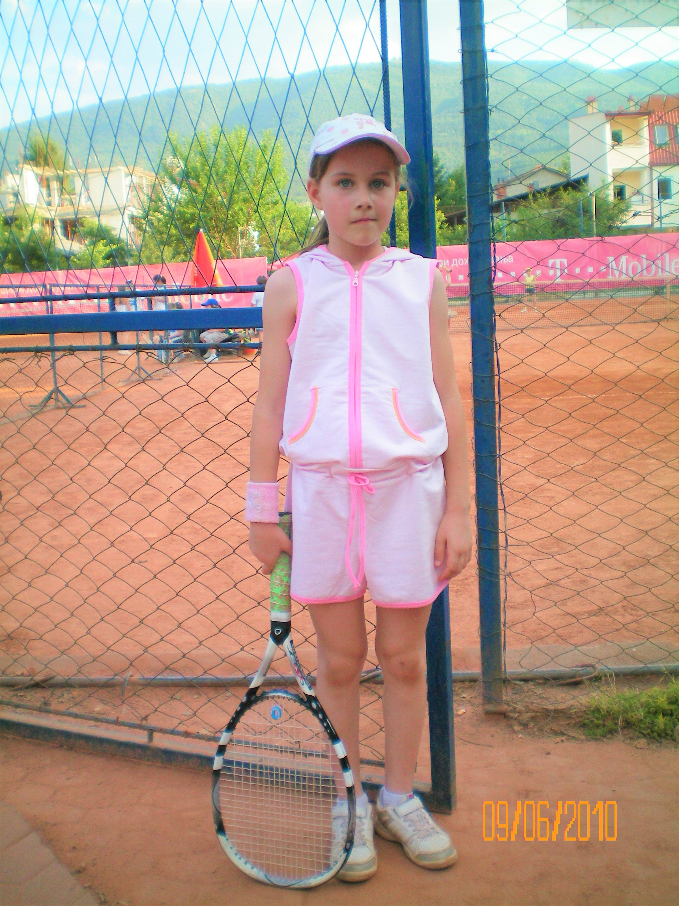
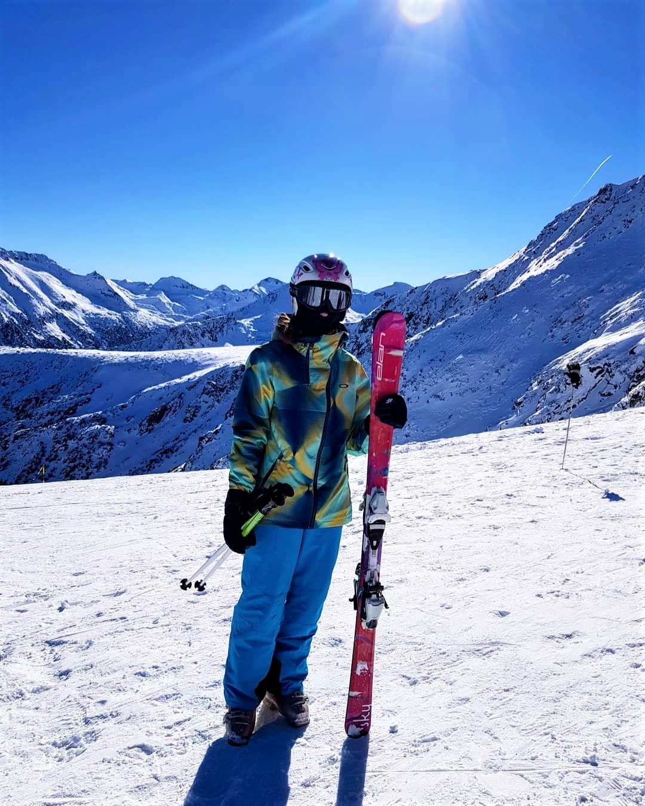

I started playing tennis when I was about 8 years old when I first enrolled to a local tennis club. I immediately fell in love with the sport, so I kept taking tennis lessons for about 5-6 years. Although I stopped taking lessons, I never stopped playing. I often play with my brother or my friends. It’s an amazing sport for muscle strengthening, improving body coordination and cardio.
From a very early age, when I was 5-6 years old, my father taught me how to ski. My whole family is obsessed with skiing, so when the winter season starts, as soon as the ski centers open, we are on the slopes, spending the whole day skiing and enjoying the mountains.

Since I have been skiing for over 15 years now, two years ago, I decided to try snowboarding as well. It was a new interesting challenge for me and it turned out to be a lot easier than I expected. I am still a lot better at skiing than snowboarding (obviously experience plays a big role), however, snowboarding added an extra fun activity to do during winter. Now I have the opportunity to switch back and forth from my skis to my snowboard depending on what I feel like doing that day.
Some of my other favorite sports include: riding a bike, hiking, playing football, ice-skating, etc.